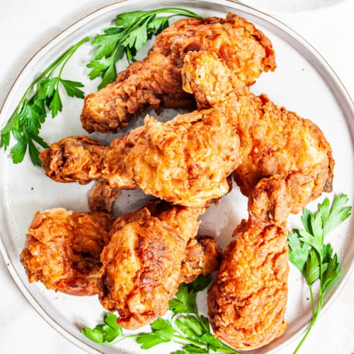

Fried Chicken

Fried chicken, a renowned world-wide recipe which comes in many different
forms and sizes. Today, we'll be making this super easy and tasty recipe,
the delicious juicy and crunchy taste will
shock all your friends and relatives so get ready to RUMBLE.
Ingredients
- 30 Saltine Crackers
- 2 Tablespoons all purpose flour
- 2 tablespoons dry potato flakes
- 1 teaspoon seasoned salt
- 1/2(half) teaspoon ground black pepper
- 1 egg
- 6 skinless, boneless chicken breast halves
- 2 Cups Vegetable oil for frying
Method
- Place crackers in a large resealable plastic bag; seal bag and crush crackers with a rolling pin until they are coarse crumbs. Add the flour, potato flakes, seasoned salt, and pepper and mix well.
- Beat egg in a shallow dish or bowl. One by one, dredge chicken pieces in egg, then place in bag with crumb mixture. Seal bag and shake to coat.
- Heat oil in a deep-fryer or large saucepan to 350 degrees F (175 degrees C).
- Fry chicken, turning frequently, until golden brown and juices run clear, 15 to 20 minutes.
←Previous Page<<< =Return to homepage= >>>Next Page→